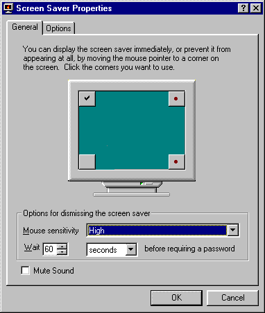
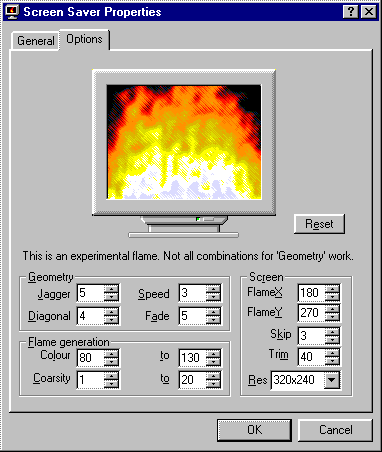

© 1997-1999 Lucian Wischik. Stop! You should not be reading this! This document describes all the system requirements expected of a screen saver, and all of the internal undocumented Windows API for accomplishing this. It would be far better for you simply to ignore the whole mess and go straight to using my Scrplus/BCB or ScrPlus/API libraries, which do everything for you a lot more simply. However, if you wish to perservere and write complete savers from scratch, then you should download the source code (minimal.zip) which accompanies this article: it is C++ code for a minimal saver, but which ignores hot corners and multiple monitors. If you don't like C++, you might look at Ron Thomas' assembly-language screen savers. If anyone has minimal example code in other languages that I could list here, please email me.
Screen savers start when the mouse and keyboard have been left idle for some time. They have five main purposes:
Be especially careful about any activities which might change the focus. If your saver pops up a top-level window on startup, this will mess up the focus: the control panel will regain focus, and your saver will be started again, and it will pop up another top-level window, and so on. This makes it very difficult for you to debug your preview mode. For debugging of the preview window you can use a utility called ScrPrev which runs its own preview window and is a little less temperamental.
// First we define some global variables and types.
// TScrMode is a global variable storing the mode the saver should be running in.
// TSaverSettings is a class with settings of various sorts.
// ss is a global variable with these settings. enum TScrMode {smNone,smConfig,smPassword,smPreview,smSaver}; TScrMode ScrMode=smNone; HINSTANCE hInstance=NULL; class TSaverSettings; TSaverSettings *ss=NULL; int WINAPI WinMain(HINSTANCE h,HINSTANCE,LPSTR,int) { hInstance=h; char *c=GetCommandLine(); if (*c=='\"') {c++; while (*c!=0 && *c!='\"') c++;} else {while( *c!=0 && *c!=' ') c++;} if (*c!=0) c++; while (*c==' ') c++; HWND hwnd=NULL; if (*c==0) {ScrMode=smConfig; hwnd=NULL;} else { if (*c=='-' || *c=='/') c++; if (*c=='p' || *c=='P' || *c=='l' || *c=='L') { c++; while (*c==' ' || *c==':') c++; if ((strcmp(c,"scrprev")==0) || (strcmp(c,"ScrPrev")==0) || (strcmp(c,"SCRPREV")==0)) hwnd=CheckForScrprev(); else hwnd=(HWND)atoi(c); ScrMode=smPreview; } else if (*c=='s' || *c=='S') { ScrMode=smSaver; } else if (*c=='c' || *c=='C') { c++; while (*c==' ' || *c==':') c++; if (*c==0) hwnd=GetForegroundWindow(); else hwnd=(HWND)atoi(c); ScrMode=smConfig; } else if (*c=='a' || *c=='A') { c++; while (*c==' ' || *c==':') c++; hwnd=(HWND)atoi(c); ScrMode=smPassword;} } } // We create a global TSaverSettings here, for convenience. // It will get used by the config dialog and by the saver as it runs ss=new TSaverSettings(); ss->ReadGeneralRegistry(); ss->ReadConfigRegistry(); if (ScrMode==smPassword) ChangePassword(hwnd); if (ScrMode==smConfig) DialogBox(hInstance,MAKEINTRESOURCE(DLG_CONFIG), hwnd,ConfigDialogProc); if (ScrMode==smSaver || ScrMode==smPreview) DoSaver(hwnd); delete ss; return 0; }
// ScrPrev is a freely available utility to make it easier to debug
// savers. Start the saver with argument /p scrprev and it will run its preview
// inside a ScrPrev window. HWND CheckForScrprev() { HWND hwnd=FindWindow("Scrprev",NULL); // looks for the Scrprev class if (hwnd==NULL) // try to load it { STARTUPINFO si; PROCESS_INFORMATION pi; ZeroMemory(&si,sizeof(si)); ZeroMemory(&pi,sizeof(pi)); si.cb=sizeof(si); si.lpReserved=NULL; si.lpTitle=NULL; si.dwFlags=0; si.cbReserved2=0; si.lpReserved2=0; si.lpDesktop=0; BOOL cres=CreateProcess(NULL,"Scrprev",0,0,FALSE, CREATE_NEW_PROCESS_GROUP|CREATE_DEFAULT_ERROR_MODE,0,0,&si,&pi); if (!cres) {Debug("Error creating scrprev process"); return NULL;} DWORD wres=WaitForInputIdle(pi.hProcess,2000); if (wres==WAIT_TIMEOUT) { Debug("Scrprev never becomes idle"); return NULL; } if (wres==0xFFFFFFFF) { Debug("ScrPrev, misc error after ScrPrev execution");return NULL; } hwnd=FindWindow("Scrprev",NULL); } if (hwnd==NULL) {Debug("Unable to find Scrprev window"); return NULL;} ::SetForegroundWindow(hwnd); hwnd=GetWindow(hwnd,GW_CHILD); if (hwnd==NULL) {Debug("Couldn't find Scrprev child"); return NULL;} return hwnd; }
class TSaverSettings
{ public:
// Following are the general saver registry settings which we will read in DWORD PasswordDelay; // in seconds DWORD MouseThreshold; // in pixels BOOL MuteSound; // Following are the configuration options particular to this saver BOOL FlashScreen; // Following are variables which the saver uses while it runs HWND hwnd; // Handle of the currently running saver window POINT InitCursorPos; // Where the mouse started off DWORD InitTime; // Time at which we started, in ms UINT idTimer; // a timer id, because this particular saver uses a timer BOOL IsDialogActive; // If dialog is active, we ignore certain messages BOOL ReallyClose; // for NT, so we know if a WM_CLOSE came from us or it. TSaverSettings(); void ReadGeneralRegistry(); // General settings that apply to all savers void ReadConfigRegistry(); // Settings particular to this saver void WriteConfigRegistry(); void CloseSaverWindow(); // A convenient way of closing the saver, if appropriate void StartDialog(); // We need special protection against dialogs when the void EndDialog(); // saver is running }; TSaverSettings::TSaverSettings() {hwnd=NULL; ReallyClose=FALSE; idTimer=0;}
See also ReadConfigRegistry code, ReadGeneralRegistryCode.
DLG_CONFIG DIALOG DISCARDABLE 0, 0, 186, 95
STYLE DS_MODALFRAME | WS_POPUP | WS_CAPTION | WS_SYSMENU
CAPTION "Config dialog"
FONT 8, "MS Sans Serif"
BEGIN
DEFPUSHBUTTON "OK",IDOK,129,7,50,14
PUSHBUTTON "Cancel",IDCANCEL,129,24,50,14
CONTROL "Flash screen",IDC_FLASH,"Button",BS_AUTOCHECKBOX |
WS_TABSTOP,23,13,56,10
END
BOOL CALLBACK ConfigDialogProc(HWND hwnd,UINT msg,WPARAM wParam,LPARAM lParam)
{ switch (msg)
{ case WM_INITDIALOG:
{ CheckDlgButton(hwnd,IDC_FLASH,ss->FlashScreen); return TRUE;
}
`:
{ int id=LOWORD(wParam);
if (id==IDOK)
{ ss->FlashScreen=(IsDlgButtonChecked(hwnd,IDC_FLASH)==BST_CHECKED);
ss->WriteConfigRegistry();
}
if (id==IDOK || id==IDCANCEL) EndDialog(hwnd,id);
} break;
}
return FALSE;
}
See also TSaverSettings code, Configuration registry code.
#include <regstr.h>
#define REGSTR_PATH_CONFIG ("Software\\Lu\\Minimal Saver")
// This saver has a single user configuration option: FlashScreen void TSaverSettings::ReadConfigRegistry() { FlashScreen=TRUE; LONG res; HKEY skey; DWORD valtype, valsize, val; res=RegOpenKeyEx(HKEY_CURRENT_USER,REGSTR_PATH_CONFIG,0,KEY_ALL_ACCESS,&skey); if (res!=ERROR_SUCCESS) return; valsize=sizeof(val); res=RegQueryValueEx(skey,"Flash Screen",0,&valtype,(LPBYTE)&val,&valsize); if (res==ERROR_SUCCESS) FlashScreen=val; RegCloseKey(skey); } void TSaverSettings::WriteConfigRegistry() { LONG res; HKEY skey; DWORD val, disp; res=RegCreateKeyEx(HKEY_CURRENT_USER,REGSTR_PATH_CONFIG,0,NULL, REG_OPTION_NON_VOLATILE,KEY_ALL_ACCESS,NULL,&skey,&disp); if (res!=ERROR_SUCCESS) return; val=FlashScreen; RegSetValueEx(skey,"Flash Screen",0,REG_DWORD,(CONST BYTE*)&val,sizeof(val)); RegCloseKey(skey); }
Whenever a user brings up the configuration dialog for a particular saver and clicks OK, then the changes to the configuration for that particular saver are written to the registry immediately. But the current choice of screen saver appears in the control panel itself and changes to it do not actually take effect, or get written to the registry, until the user clicks OK or Apply on the Desktop control panel itself! Likewise the password option.
So someone might select a saver and spend ages configuring it but then fail to close the control panel: and when they use hot corners to see the effect immediately Windows will not launch the saver they had so painstakingly configured, but instead will launch the previous saver! And then they go to the control panel and turn on password checking and click Preview and it doesn't ask for your password, but when you click Apply and then Preview it does! And then you turn off password checking and you click Preview but it still (under '95) asks you for a password, only you don't know what to do because you think that passwords are turned off and anyway you've forgotten it!
This might seem odd at first, but you might as well get used to it.
#include <regstr.h>
#define REGSTR_PATH_PLUSSCR (REGSTR_PATH_SETUP "\\Screen Savers")
void TSaverSettings::ReadGeneralRegistry()
{ PasswordDelay=15; MouseThreshold=50; IsDialogActive=FALSE;
// default values in case they're not in registry LONG res; HKEY skey; DWORD valtype, valsize, val; res=RegOpenKeyEx(HKEY_CURRENT_USER,REGSTR_PATH_PLUSSCR,0,KEY_ALL_ACCESS,&skey); if (res!=ERROR_SUCCESS) return; valsize=sizeof(val); res=RegQueryValueEx(skey,"Password Delay",0,&valtype,(LPBYTE)&val,&valsize); if (res==ERROR_SUCCESS) PasswordDelay=val; valsize=sizeof(val); res=RegQueryValueEx(skey,"Mouse Threshold",0,&valtype,(LPBYTE)&val,&valsize); if (res==ERROR_SUCCESS) MouseThreshold=val; valsize=sizeof(val); res=RegQueryValueEx(skey,"Mute Sound",0,&valtype,(LPBYTE)&val,&valsize); if (res==ERROR_SUCCESS) MuteSound=val; RegCloseKey(skey); }
If all you want to do is read the values, then the above information is adequate. If additionally you want to write your configuration dialog to be able to change these values, or if you want to write a utility which can change them, then you need to worry about three extra configuration values. It is a real drag writing your own general configuration dialog. The author strongly advises you to use his ScrPlus library, which does it all automatically.
If you do offer a configuration dialog with the ability to change these settings, it is conventional to use a dialog box with two or more tabs. The first tab would have general settings, and subsequent tabs would have the settings for this particular saver. When the dialog is shown it would typically be started on its second page. An example resource file for the dialog is given below. (You'll have to implement it all, including the MonitorClass, yourself.) If you wish to provide context-help for the controls in the General tab, in response to WM_HELP and WM_CONTEXTHELP, then you can either use the help topics provided in the Plus!.hlp file (which comes with Windows Plus! only) or you can use the help file SCRPLUS.HLP which is available in the file minimal.zip along with source code for a minimal saver, and which is freely distributable. Or you can of course write your own help file.
// Identifiers for the various controls
#define ID_DISMISSGROUP 3630
#define ID_THRESHOLDDESC 3631
#define ID_THRESHOLD 3632
#define ID_WAITDESC 3633
#define ID_WAITTEXT 3634
#define ID_WAITBUDDY 3635
#define ID_WAITBOX 3636
#define ID_WAITMOREDESC 3637
#define ID_SAGEOK 3638
#define ID_SAGEBAD 3639
#define ID_MONITOR 3640
#define ID_MUTE 3641
#define ID_MONITORSCREEN 3642
#define ID_ACTIVECONFIG 3643
#define ID_ABOUT 3650
// Help topics in Plus!.hlp and SCRPLUS.HLP
#define PLUSHELP_CORNERS 3100
#define PLUSHELP_THRESHOLD 3101
#define PLUSHELP_PASSWORDDELAY 3102
#define PLUSHELP_COPYRIGHT 3103
#define PLUSHELP_PREVIEW 3104
#define PLUSHELP_MUTE 3105
// Relation between controls in dialog, and help topic
static DWORD GeneralHelpIds[] = {
ID_DISMISSGROUP, PLUSHELP_THRESHOLD,
ID_THRESHOLDDESC, PLUSHELP_THRESHOLD,
ID_THRESHOLD, PLUSHELP_THRESHOLD,
ID_WAITDESC, PLUSHELP_PASSWORDDELAY,
ID_WAITTEXT, PLUSHELP_PASSWORDDELAY,
ID_WAITBUDDY, PLUSHELP_PASSWORDDELAY,
ID_WAITBOX, PLUSHELP_PASSWORDDELAY,
ID_WAITMOREDESC, PLUSHELP_PASSWORDDELAY,
ID_SAGEOK, PLUSHELP_CORNERS,
ID_SAGEBAD, PLUSHELP_CORNERS,
ID_MONITOR, PLUSHELP_CORNERS,
ID_MUTE, PLUSHELP_MUTE, 0,0};
DLG_GENERAL DIALOG 0,0,237,220
STYLE DS_MODALFRAME|WS_POPUP|WS_VISIBLE|WS_CAPTION|WS_SYSMENU
CAPTION "General"
FONT 8,"MS Sans Serif"
{
CONTROL "You can display the screen saver immediately or prevent it from\n"
"appearing at all,by moving the mouse pointer to a corner on \n"
"the screen. Click the corners you want to use.",
ID_SAGEOK,"STATIC",SS_LEFT|WS_CHILD|WS_VISIBLE|WS_GROUP,13,8,282,43
CONTROL "The system agent must be active in order for you to display \n"
"the screen saver immediately by moving the mouse \n"
"pointer to a corner on the screen.",
ID_SAGEBAD,"STATIC",SS_LEFT|WS_CHILD|WS_VISIBLE|WS_GROUP,13,13,282,43
CONTROL "Options for dismissing the screen saver",
ID_DISMISSGROUP,"BUTTON",BS_GROUPBOX|WS_CHILD|WS_VISIBLE,7,154,223,47
CONTROL "&Mouse sensitivity",
ID_THRESHOLDDESC,"STATIC",SS_LEFT|WS_CHILD|WS_VISIBLE|WS_GROUP,13,169,58,12
CONTROL "",ID_THRESHOLD,"COMBOBOX",
CBS_DROPDOWNLIST|WS_CHILD|WS_VISIBLE|WS_VSCROLL|WS_TABSTOP,74,167,148,72
CONTROL "&Wait",
ID_WAITDESC,"STATIC",SS_RIGHT|WS_CHILD|WS_VISIBLE|WS_GROUP,13,184,16,12
CONTROL "",ID_WAITTEXT,"EDIT",
ES_LEFT|WS_CHILD|WS_VISIBLE|WS_BORDER|WS_TABSTOP,32,184,25,12
CONTROL "Generic1",ID_WAITBUDDY,
"msctls_updown32",54|WS_CHILD|WS_VISIBLE,57,184,11,36
CONTROL "",ID_WAITBOX,"COMBOBOX",
CBS_DROPDOWNLIST|WS_CHILD|WS_VISIBLE|WS_VSCROLL|WS_TABSTOP,74,184,50,36
CONTROL "before requiring a password",ID_WAITMOREDESC,"STATIC",
SS_LEFT|WS_CHILD|WS_VISIBLE|WS_GROUP,130,185,95,11
CONTROL "Always require password",ID_WAITSUMMARY,"STATIC",
SS_LEFT|WS_CHILD|WS_VISIBLE,13,184,282,11
CONTROL "Control corners",ID_MONITOR,MonitorClassName,
MS_CORNERS|WS_CHILD|WS_VISIBLE,108,82,20,20
CONTROL "Mute Sound",ID_MUTE,"button",
BS_AUTOCHECKBOX|WS_CHILD|WS_VISIBLE|WS_TABSTOP,11,202,65,15
}
LANGUAGE LANG_NEUTRAL,SUBLANG_NEUTRAL
 
void ChangePassword(HWND hwnd)
{ // This only ever gets called under '95, when started with the /a option. HINSTANCE hmpr=::LoadLibrary("MPR.DLL"); if (hmpr==NULL) {Debug("MPR.DLL not found: cannot change password.");return;} typedef VOID (WINAPI *PWDCHANGEPASSWORD) (LPCSTR lpcRegkeyname,HWND hwnd,UINT uiReserved1,UINT uiReserved2); PWDCHANGEPASSWORD PwdChangePassword= (PWDCHANGEPASSWORD)::GetProcAddress(hmpr,"PwdChangePasswordA"); if (PwdChangePassword==NULL) { FreeLibrary(hmpr); Debug("PwdChangeProc not found: cannot change password");return; } PwdChangePassword("SCRSAVE",hwnd,0,0); FreeLibrary(hmpr); }
This function makes use of the PwdChangePassword function in MPR.DLL. If you wanted to use your own password configuration system under '95 or Plus!, you could simply write your own ChangePassword routine and your own password verification routine. The situation is more difficult under NT.
The behaviour of a full-screen window /s is more complex:
In the code below we use the same window procedure for both the full-screen and preview modes of the saver. The global variable ScrMode, set in WinMain, determines whether it should respond to things like mouse clicks.
// The function CloseSaverWindow uses ReallyClose, as part of a workaround to deal
// with the WM_CLOSE messages that get sent automatically under NT. void TSaverSettings::CloseSaverWindow() { ReallyClose=TRUE; PostMessage(hwnd,WM_CLOSE,0,0); } // When a dialog is up, the IsDialogActive flag prevents things like
// mouse-movement and key presses from terminating the saver. When a dialog
// closes, the mouse origin is re-read for threshold-detection purposes. void TSaverSettings::StartDialog() { IsDialogActive=TRUE; SendMessage(hwnd,WM_SETCURSOR,0,0); } void TSaverSettings::EndDialog() { IsDialogActive=FALSE; SendMessage(hwnd,WM_SETCURSOR,0,0); GetCursorPos(&InitCursorPos); }
// We refer to a global value DEBUG which has have been #defined to
// either TRUE or FALSE. If TRUE then we run the saver in only a quarter of
// the screen without the WS_EX_TOPMOST flag: this makes it easier to switch
// back and forth between the debugger and the saver. void DoSaver(HWND hparwnd) { WNDCLASS wc; wc.style=CS_HREDRAW | CS_VREDRAW; wc.lpfnWndProc=SaverWindowProc; wc.cbClsExtra=0; wc.cbWndExtra=0; wc.hInstance=hInstance; wc.hIcon=NULL; wc.hCursor=NULL; wc.hbrBackground=(HBRUSH)GetStockObject(BLACK_BRUSH); wc.lpszMenuName=NULL; wc.lpszClassName="ScrClass"; RegisterClass(&wc); if (ScrMode==smPreview) { RECT rc; GetWindowRect(hparwnd,&rc); int cx=rc.right-rc.left, cy=rc.bottom-rc.top; hScrWindow=CreateWindowEx(0,"ScrClass","SaverPreview",WS_CHILD|WS_VISIBLE, 0,0,cx,cy,hparwnd,NULL,hInstance,NULL); } else { int cx=GetSystemMetrics(SM_CXSCREEN), cy=GetSystemMetrics(SM_CYSCREEN); DWORD exstyle, style; if (DEBUG) { cx=cx/3; cy=cy/3; exstyle=0; style=WS_OVERLAPPEDWINDOW|WS_VISIBLE;} else {exstyle=WS_EX_TOPMOST; style=WS_POPUP|WS_VISIBLE;} hScrWindow=CreateWindowEx(exstyle,"ScrClass","SaverWindow",style, 0,0,cx,cy,NULL,NULL,hInstance,NULL); } if (hScrWindow==NULL) return; UINT oldval; if (ScrMode==smSaver) SystemParametersInfo(SPI_SETSCREENSAVERRUNNING,1,&oldval,0); MSG msg; while (GetMessage(&msg,NULL,0,0)) { TranslateMessage(&msg); DispatchMessage(&msg); } if (ScrMode==smSaver) SystemParametersInfo(SPI_SETSCREENSAVERRUNNING,0,&oldval,0); return; }
LRESULT CALLBACK SaverWindowProc(HWND hwnd,UINT msg,WPARAM wParam,LPARAM lParam)
{ switch (msg)
{ case WM_CREATE:
{ Debug("WM_CREATE... reading initial position and time, and starting timer"); ss->hwnd=hwnd; GetCursorPos(&(ss->InitCursorPos)); ss->InitTime=GetTickCount(); ss->idTimer=SetTimer(hwnd,0,100,NULL); } break; case WM_TIMER: { if (ss->FlashScreen) { HDC hdc=GetDC(hwnd); RECT rc; GetClientRect(hwnd, &rc); FillRect(hdc,&rc,GetSysColorBrush((GetTickCount()>>8)%25)); ReleaseDC(hwnd,hdc); } } break; case WM_ACTIVATE: case WM_ACTIVATEAPP: case WM_NCACTIVATE: { if (ScrMode==smSaver && !ss->IsDialogActive && LOWORD(wParam)==WA_INACTIVE && !DEBUG) { Debug("WM_ACTIVATE: about to inactive window, so sending close"); ss->CloseSaverWindow(); } } break; case WM_SETCURSOR: { if (ScrMode==smSaver && !ss->IsDialogActive && !DEBUG) { Debug("WM_SETCURSOR: Saver is running at the moment: so no cursor"); SetCursor(NULL); } else { Debug("WM_SETCURSOR: dialog up, or Preview or Debug mode: normal cursor"); SetCursor(LoadCursor(NULL,IDC_ARROW)); } } break; case WM_LBUTTONDOWN: case WM_MBUTTONDOWN: case WM_RBUTTONDOWN: case WM_KEYDOWN: { if (ScrMode==smSaver && !ss->IsDialogActive) { Debug("WM_BUTTONDOWN: sending close"); ss->CloseSaverWindow(); } } break; case WM_MOUSEMOVE: { if (ScrMode==smSaver && !ss->IsDialogActive && !DEBUG) { POINT pt; GetCursorPos(&pt); int dx=pt.x-ss->InitCursorPos.x; if (dx<0) dx=-dx; int dy=pt.y-ss->InitCursorPos.y; if (dy<0) dy=-dy; if (dx>(int)ss->MouseThreshold || dy>(int)ss->MouseThreshold) { Debug("WM_MOUSEMOVE: moved beyond threshold, sending close"); ss->CloseSaverWindow(); } } } break; case WM_SYSCOMMAND: { if (ScrMode==smSaver) { if (wParam==SC_SCREENSAVE) { Debug("WM_SYSCOMMAND: gobbling up SC_SCREENSAVE to stop new saver running."); return FALSE; } if (wParam==SC_CLOSE && !DEBUG) { Debug("WM_SYSCOMMAND: gobbling up SC_CLOSE"); return FALSE; } } } break; case (WM_CLOSE): { if (ScrMode==smSaver && ss->ReallyClose && !ss->IsDialogActive) { Debug("WM_CLOSE: maybe we need a password"); BOOL CanClose=TRUE; if (GetTickCount()-ss->InitTime > 1000*ss->PasswordDelay) { ss->StartDialog(); CanClose=VerifyPassword(hwnd); ss->EndDialog(); } if (CanClose) {Debug("WM_CLOSE: doing a DestroyWindow"); DestroyWindow(hwnd);} else {Debug("WM_CLOSE: but failed password, so doing nothing");} } if (ScrMode==smSaver) return FALSE; // return FALSE here so that DefWindowProc doesn't get called,
// because it would just DestroyWindow itself } break; case WM_DESTROY: { if (ss->idTimer!=0) KillTimer(hwnd,ss->idTimer); ss->idTimer=0; Debug("POSTQUITMESSAGE from WM_DESTROY!!"); PostQuitMessage(0); } break; } return DefWindowProc(hwnd,msg,wParam,lParam); }
BOOL VerifyPassword(HWND hwnd)
{ // Under NT, we return TRUE immediately. This lets the saver quit,
// and the system manages passwords. Under '95, we call VerifyScreenSavePwd.
// This checks the appropriate registry key and, if necessary,
// pops up a verify dialog OSVERSIONINFO osv; osv.dwOSVersionInfoSize=sizeof(osv); GetVersionEx(&osv); if (osv.dwPlatformId==VER_PLATFORM_WIN32_NT) return TRUE; HINSTANCE hpwdcpl=::LoadLibrary("PASSWORD.CPL"); if (hpwdcpl==NULL) {Debug("Unable to load PASSWORD.CPL. Aborting");return TRUE;}
typedef BOOL (WINAPI *VERIFYSCREENSAVEPWD)(HWND hwnd);
VERIFYSCREENSAVEPWD VerifyScreenSavePwd;
VerifyScreenSavePwd=
(VERIFYSCREENSAVEPWD)GetProcAddress(hpwdcpl,"VerifyScreenSavePwd");
if (VerifyScreenSavePwd==NULL)
{ Debug("Unable to get VerifyPwProc address. Aborting"); FreeLibrary(hpwdcpl);return TRUE; } Debug("About to call VerifyPwProc"); BOOL bres=VerifyScreenSavePwd(hwnd); FreeLibrary(hpwdcpl); return bres; }
STRINGTABLE DISCARDABLE
BEGIN
1 "Minimal screen saver"
END
#define DEBUG FALSE
#if DEBUG
void Debug(char *c) {OutputDebugString(c); OutputDebugString("\n");}
#else
void Debug(char *) {}
#endif
Explorer uses the first icon resource in the saver as its icon. Either create your own icon from scratch, or base it upon one of the standard saver icons:
Next, compile the saver and rename it with the suffix .scr. Copy it into the windows directory: then it will appear in the Display Properties control panel. See also Installation of a saver.
BOOL IsSaverRunning()
{ BOOL srunning=FALSE;
BOOL res=SystemParametersInfo(SPI_GETSCREENSAVERRUNNING,0,&srunning,0);
if (res) {if (srunning==0) return FALSE; else return TRUE;}
// That works fine under '95, '98 and NT5. But not older versions of NT.
// Hence we need some magic. HDESK hDesk=OpenDesktop(TEXT("screen-saver"), 0, FALSE, MAXIMUM_ALLOWED); if (hDesk!=NULL) {CloseDesktop(hDesk); return TRUE;} if (GetLastError()==ERROR_ACCESS_DENIED) return TRUE; else return FALSE; }
// Code to launch saver full-screen
if (IsScreensaverRunning()) return;
// We don't want to try and set it running again.
HWND hfw=GetForegroundWindow();
if (hfw==NULL) DefWindowProc(hwnd,WM_SYSCOMMAND,SC_SCREENSAVE,0);
else PostMessage(hfw,WM_SYSCOMMAND,SC_SCREENSAVE,0);
// Code to launch configuration dialog
char scr[MAX_PATH];
DWORD res=GetPrivateProfileString("boot","SCRNSAVE.EXE","",scr,MAX_PATH,"system.ini");
STARTUPINFO si; PROCESS_INFORMATION pi;
ZeroMemory(&si,sizeof(si)); ZeroMemory(&pi,sizeof(pi));
si.cb=sizeof(si);
char c[MAX_PATH]; wsprintf(c,"\"%s\" /c",scr);
BOOL res=CreateProcess(scr,c,NULL,NULL,FALSE,0,NULL,NULL,&si,&pi);
if (res) return IDOK; else return IDCANCEL;
Under Windows '95 and Plus!, you must disable these keys by calling SystemParametersInfo(SPI_SETSCREENSAVERRUNNING,TRUE,..). After the saver has finished you re-enable them by calling SystemParametersInfo(SPI_SETSCREENSAVERRUNNING,FALSE,..);. Under NT the system keys get disabled automatically, but it's a good idea to call SystemParametersInfo just in case it has other undocumented side-effects.
The following section points out a problem that may occur with ctrl-alt-delete if using DirectDraw, and gives a solution.
If you use ChangeDisplaySettings or pDirectDraw->SetDisplayMode then a couple of spurious WM_MOUSEMOVE messages get generated as the mouse settles into its new position. To complicate matters, these messages do not get sent during the mode-change call but after. There are a few possible solutions, all unpleasant: you could count down and ignore the first five WM_MOUSEMOVE messages; or you could ignore all such messages that occur within the five seconds after changing mode. It will help greatly if you use some Debug function to display a record of every single window message that gets sent to your window during the change-mode.
Under '95, dialogs such as the password dialog must be shown by the saver itself. If you are running at 320x200 or 320x240 then the GDI cannot draw dialogs onto the screen. Just before showing the dialog you will have to change into a more respectable screen mode, and just after you will have to restore the screen to what it was before. This often looks ugly. You might try to copy the screen contents as they were in the full-screen low-resolution mode and then use them as a bitmap background in the respectable mode.
If you use DirectDraw to change modes, the act of changing out of full-screen mode will re-enable the system keys. You will have to call SystemParametersInfo(SPI_SETSCREENSAVERRUNNING,TRUE,...) to disable them again.
The best use for hot corners is in interactive savers, such as a puzzle saver or an arcade-game saver. The user might be bored for a few minutes waiting for a download to finish, or might be fiddling with the computer while making a telephone call. Imagine how easy it is for the user simply to move their mouse to the top left corner of the screen and have your program run immediately!
The section on installation below includes sample code for installing ScrHots. Here in this section we give code which works both for ScrHots and for SAGE.DLL to interact with the hot corner services.
// CheckHots: this routine checks for Hot Corner services.
// It first tries with SAGE.DLL, which comes with Windows Plus!
// Failint this it tries with ScrHots, a third-party hot-corner
// service program written by the author that is freely
// distributable and works with NT and '95. BOOL CheckHots() { typedef BOOL (WINAPI *SYSTEMAGENTDETECT)(); HINSTANCE sagedll=LoadLibrary("Sage.dll"); if (sagedll!=NULL) { SYSTEMAGENTDETECT detectproc=(SYSTEMAGENTDETECT) GetProcAddress(sagedll,"System_Agent_Detect");
BOOL res=FALSE;
if (detectproc!=NULL) res=detectproc();
FreeLibrary(sagedll);
if (res) return TRUE;
}
HINSTANCE hotsdll=LoadLibrary("ScrHots.dll");
if (hotsdll!=NULL)
{ SYSTEMAGENTDETECT detectproc=(SYSTEMAGENTDETECT)
GetProcAddress(hotsdll,"System_Agent_Detect");
BOOL res=FALSE;
if (detectproc!=NULL) res=detectproc();
FreeLibrary(hotsdll);
if (res) return TRUE;
}
return FALSE;
}
// NotifyHots: if you make any changes to the hot corner
// information in the registry, you must call NotifyHots
// to inform the hot corner services of your change. void __fastcall NotifyHots() { typedef VOID (WINAPI *SCREENSAVERCHANGED)(); HINSTANCE sagedll=LoadLibrary("Sage.DLL"); if (sagedll!=NULL) { SCREENSAVERCHANGED changedproc=(SCREENSAVERCHANGED) GetProcAddress(sagedll,"Screen_Saver_Changed");
if (changedproc!=NULL) changedproc();
FreeLibrary(sagedll);
}
HINSTANCE hotsdll=LoadLibrary("ScrHots.dll");
if (hotsdll!=NULL)
{ SCREENSAVERCHANGED changedproc=(SCREENSAVERCHANGED)
GetProcAddress(hotsdll,"Screen_Saver_Changed");
if (changedproc!=NULL) changedproc();
FreeLibrary(hotsdll);
}
}
[boot]Under '95 and Plus!, this corresponds to an actual file in the Windows directory called SYSTEM.INI. Under NT the values are actually stored in the registry but you should still use Get/WritePrivateProfileString as these calls are automatically mapped to the registry. The filename must be a short filename.
...
SCRNSAVE.EXE=C:\WINDOWS\FLAME.SCR
To change the currently selected saver you must not only change the value mentioned above; but also cause a WM_WININICHANGED message to be sent. This will inform the rest of the setting that the value has changed. In particular, it means that the next time the Display Properties dialog appears, it will be correct.
// To get the currently selected saver:
char CurSav[MAX_PATH];
DWORD res=GetPrivateProfileString("boot","SCRNSAVE.EXE","",
CurSav,MAX_PATH,"system.ini");
if (res==0 || strcmp(scrt,"")==0) {..} // Currently selected saver is 'none'
// To change the currently selected saver:
char ShortName[MAX_PATH];
GetShortPathName(CurSav,ShortName,MAX_PATH);
WritePrivateProfileString("boot","SCRNSAVE.EXE",ShortName,"system.ini");
SystemParametersInfo(SPI_SETSCREENSAVEACTIVE,TRUE,NULL,TRUE);
// that sends a WM_WININICHANGE so that DisplayProperties dialog knows we've changed.
// It also enables screensaving.
Note that the windows directory is the corret place to install a saver. This is because GetWindowsDirectory() will always return a directory to which you have write-access. You should not install a saver into the system directory because on many installations (such as shared network installations) it is read-only.
It is possible to install a saver into a different directory. The Display Properties dialog actually creates its list of possible savers from three locations: the directory of the currently selected saver; the Windows directory; and the System directory. You might choose to install a couple of theme savers in a theme directory so that they are only visible when the user selects your theme.
The essence of a saver is that it should be easy and fun to use, and easy and fun to install. If at all possible you should have a single .scr file with no additional files. Even if you want to have additional bitmaps or JPEGs with your saver, these might as well be deployed as resources in the .scr file. It also makes it much easier for the user if you deploy your saver as a single self-extracting .exe file which copies the appropriate files into the appropriate places and installs the saver.
You can download the file install.zip. This contains complete source code for a self-extracting saver installer, and you are free to modify and distribute it as you wish. It installs both ScrHots and your saver into the system, and pops up a preview dialog when installation is complete. The code is generic and can be used to install any saver merely by making a few changes to the resource file. You may use the code however you wish.
If you simply want an alternative to ShellExecute("install",..) rather than a full-blown self-extracting installer, you might use the following workaround. Rather than popping up the Display Properties proper, this code pops up its own dialog with a preview of the saver. This code is part of the above-mentioned installer.
// Call the following two procedures in your installation routine.
SelectAsDefault(savpath);
ExecutePreviewDialog(hwnd,savpath);
// SelectAsDefault: makes scr the currently selected saver
oid SelectAsDefault(char *scr)
{ char sscr[MAX_PATH];
GetShortPathName(scr,sscr,MAX_PATH);
WritePrivateProfileString("boot","SCRNSAVE.EXE",sscr,"system.ini");
SystemParametersInfo(SPI_SETSCREENSAVEACTIVE,TRUE,NULL,TRUE);
// that sends a WM_WININICHANGE so that DisplayProperties
// dialog knows we've changed
}
// ExecutePreviewDialog: displays a dialog with a preview running inside it.
int ExecutePreviewDialog(HWND hwnd,char *scr)
{ typedef struct {DLGITEMTEMPLATE dli; WORD ch; WORD c; WORD t; WORD dummy;
WORD cd;} TDlgItem;
typedef struct {DLGTEMPLATE dlt; WORD m; WORD c; WCHAR t[8]; WORD pt; WCHAR f[14];
TDlgItem ia; TDlgItem ib; TDlgItem ic;} TDlgData;
TDlgData dtp={{DS_MODALFRAME|DS_3DLOOK|DS_SETFONT|DS_CENTER|WS_POPUP|
WS_CAPTION|WS_SYSMENU|WS_VISIBLE,0,3,0,0,278,196},
0,0,L"Preview",8,L"MS Sans Serif",
{{BS_DEFPUSHBUTTON|WS_CHILD|WS_VISIBLE,0,113,175,50,14,IDOK},0xFFFF,0x0080,0,0,0},
{{SS_BLACKRECT|WS_CHILD|WS_VISIBLE,0,7,7,264,152,3},0xFFFF,0x0082,0,0,0},
{{SS_CENTER|WS_CHILD|WS_VISIBLE,0,7,162,264,8,2},0xFFFF,0x0082,0,0,0}};
return DialogBoxIndirectParam(hInstance,(DLGTEMPLATE*)&dtp,hwnd,
ExecutePreviewDialogProc,(LONG)scr);
}
LRESULT CALLBACK BlackWindowProc(HWND hwnd,UINT msg,WPARAM wParam,LPARAM lParam)
{ LONG oldproc=GetWindowLong(hwnd,GWL_USERDATA);
if (msg==WM_DESTROY) SetWindowLong(hwnd,GWL_WNDPROC,oldproc);
if (msg==WM_PAINT)
{ PAINTSTRUCT ps; BeginPaint(hwnd,&ps);
FillRect(ps.hdc,&ps.rcPaint,(HBRUSH)GetStockObject(BLACK_BRUSH));
EndPaint(hwnd,&ps);return 0;
}
return CallWindowProc((WNDPROC)oldproc,hwnd,msg,wParam,lParam);
}
BOOL CALLBACK ExecutePreviewDialogProc(HWND hwnd,UINT msg,WPARAM wParam,LPARAM lParam)
{ switch (msg)
{ case WM_INITDIALOG:
{ SetDlgItemText(hwnd,IDOK,"OK");
SetDlgItemText(hwnd,2,"Screen saver succesfully installed!");
HWND hPrev=GetDlgItem(hwnd,3);
LONG oldproc=GetWindowLong(hPrev,GWL_WNDPROC);
SetWindowLong(hPrev,GWL_USERDATA,oldproc);
SetWindowLong(hPrev,GWL_WNDPROC,(LONG)BlackWindowProc);
STARTUPINFO si; PROCESS_INFORMATION pi;
ZeroMemory(&si,sizeof(si)); ZeroMemory(&pi,sizeof(pi));
si.cb=sizeof(si); char *scr=(char *)lParam;
char c[MAX_PATH]; wsprintf(c,"\"%s\" /p %i",scr,(int)hPrev);
CreateProcess(scr,c,NULL,NULL,TRUE,IDLE_PRIORITY_CLASS,NULL,NULL,&si,&pi);
return TRUE;
}
case WM_COMMAND:
{ int id=LOWORD(wParam); switch (id)
{ case IDOK: case IDCANCEL:
{ HWND hPrev=GetDlgItem(hwnd,3); HWND hChild=GetWindow(hPrev,GW_CHILD);
if (hChild!=NULL) SendMessage(hChild,WM_CLOSE,0,0);
hChild=GetWindow(hPrev,GW_CHILD); if (hChild!=NULL) DestroyWindow(hChild);
EndDialog(hwnd,id); return TRUE;
}
}
}
}
return FALSE;
}
#define DEBUG TRUE
#if DEBUG
void Debug(char *c) {OutputDebugString(c); OutputDebugString("\n");}
void DebugMessage(HWND hwnd,UINT msg,WPARAM wParam,LPARAM lParam)
{ char c[100];
wsprintf(c,"%04lx: %s (msg=%lx,wParam=%lx,lParam=%lx)",
(DWORD)hwnd,MessageName(msg),(DWORD)msg,(DWORD)wParam,(DWORD)lParam);
Debug(c);
}
#else
void Debug(char *) {}
void DebugMessage(HWND,UINT,WPARAM,LPARAM) {}
#endif
// MessageName: this function returns the text name of the message.
// Full source code of the function can be found inside minimal.zip // in the file 'minimal.cpp'. char *MessageName(UINT msg) { switch (msg) { case 0x0001: return "WM_CREATE"; case 0x0002: return "WM_DESTROY"; case 0x0003: return "WM_MOVE"; ... default: return "WM_????"; } } LRESULT CALLBACK SaverWindowProc(HWND hwnd,UINT msg,WPARAM wParam,LPARAM lParam) { DebugMessage(hwnd,msg,wParam,lParam); ... }
If you installed the preview of Win'98 on top of Win'95 then this command no longer works. You will have to use instead rundll32 shell32.dll,Control_RunDLL desk.cpl. This runs the Display Properties control panel without changing tabs or selecting your saver.
It can be very difficult working with this command under Windows '95, because whenever the control panel regains focus it terminates the current preview and starts a new one. To avoid this problem you can instead display previews with the ScrPrev utility, which is freely available in the file minimal.zip. ScrPrev is a simple application which contains a preview window. The following code will be very useful. It lets you launch ScrPrev and have the preview display inside it simply by starting your saver with the argument /p scrprev. The source code given above for parsing a command-line handles scrprev correctly.
Also, normally a full-screen saver is expected to respond to keyboard, mouse and focus events by terminating itself. This makes it impossible to debug. The source code given above for SaverWindowProc specifically disabled the normal response to mouse and focus messages if the DEBUG flag was set.
With an interactive saver such as a puzzle or an arcade game, you might wish to distribute ScrHots with your saver to support hot corners. Then the user can easily start playing your game simply by moving the mouse to a corner of the screen. See the section on Hot Corners for more details.
The solution is simply to use WM_TIMER messages instead. If you want something faster you can use multimedia timers or multi-threading.
In the ScrPlus library, written by the author of this document, there is a special high-performance multi-threaded timer. It sends timer messages to your application just like a normal WM_TIMER so you do not need to change any code at all, but it has speed and responsiveness as good as something in the message loop. You might consider using this library.
The problem can be cured by ensuring that the dialog appears as a child of the saver window, by ensuring that you use the IsDialogActive flag properly, and by putting in a DebugMessage routine as above.
If the dialog appears as a child of NULL then it will actually appear underneath the WS_EX_TOPMOST saver window. That means that you will never see it, and hence never realise why your saver locked up. So: be sure to create dialogs as children of your saver window rather than of NULL.
Another common mistake that causes lockup is when you forget to put a break statement at the end of a case in your SaverWindowProc. Perhaps the WM_CLOSE method ends up being called immediately after WM_SETCURSOR or something like that.
typedef VOID (WINAPI *PWDCHANGEPASSWORD) (
LPCSTR lpcRegkeyname,
HWND hwnd,
UINT uiReserved1,
UINT uiReserved2);
void ChangePassword(HWND hwnd)This will pop up a change-password dialog box that relates to the entries stored in the registry under the key \HKEY_LOCAL_MACHINE\System\CurrentControlSet\control\PwdProvider\SCRSAVE. This registry key contains the following fields:
{ // This only ever gets called under '95, when started with the /a option. HINSTANCE hmpr=::LoadLibrary("MPR.DLL"); if (hmpr==NULL) {Debug("MPR.DLL not found: cannot change password.");return;} typedef VOID (WINAPI *PWDCHANGEPASSWORD) (LPCSTR lpcRegkeyname,HWND hwnd,UINT uiReserved1,UINT uiReserved2); PWDCHANGEPASSWORD PwdChangePassword= (PWDCHANGEPASSWORD)::GetProcAddress(hmpr,"PwdChangePasswordA"); if (PwdChangePassword==NULL) { FreeLibrary(hmpr); Debug("PwdChangeProc not found: cannot change password");return; } PwdChangePassword("SCRSAVE",hwnd,0,0); FreeLibrary(hmpr); }
ChangePassword=PPChangePassword;We don't have to worry about all this. But it's worth noting that PASSWORD.CPL contains the the function VerifyScreenSavePwd, which we use later on to check the password.
Description=Windows screen saver;
GetPasswordStatus=PPGetPasswordStatus;
ProviderPath=password.cpl
typedef BOOL (WINAPI *VERIFYSCREENSAVEPWD)(HWND hwnd);
BOOL VerifyPassword(HWND hwnd)
{ // Under NT, we return TRUE immediately. This lets the saver quit,
// and the system manages passwords. Under '95, we call VerifyScreenSavePwd.
// This checks the appropriate registry key and, if necessary,
// pops up a verify dialog OSVERSIONINFO osv; osv.dwOSVersionInfoSize=sizeof(osv); GetVersionEx(&osv); if (osv.dwPlatformId==VER_PLATFORM_WIN32_NT) return TRUE; HINSTANCE hpwdcpl=::LoadLibrary("PASSWORD.CPL"); if (hpwdcpl==NULL) {Debug("Unable to load PASSWORD.CPL. Aborting");return TRUE;}
typedef BOOL (WINAPI *VERIFYSCREENSAVEPWD)(HWND hwnd);
VERIFYSCREENSAVEPWD VerifyScreenSavePwd;
VerifyScreenSavePwd=
(VERIFYSCREENSAVEPWD)GetProcAddress(hpwdcpl,"VerifyScreenSavePwd");
if (VerifyScreenSavePwd==NULL)
{ Debug("Unable to get VerifyPwProc address. Aborting"); FreeLibrary(hpwdcpl);return TRUE; } Debug("About to call VerifyPwProc"); BOOL bres=VerifyScreenSavePwd(hwnd); FreeLibrary(hpwdcpl); return bres; }
BOOL SystemParametersInfo(SPI_SETSCREENSAVERRUNNING,
UINT newval,
LPVOID &oldval,
0);
BOOL SystemParametersInfo(SPI_GETSCREENSAVERRUNNING,
0,
LPVOID &val,
0);
... create window ...
UINT oldval;
if (ScrMode==smSaver) SystemParametersInfo(SPI_SETSCREENSAVERRUNNING,1,&oldval,0);
MSG msg;
while (GetMessage(&msg,NULL,0,0))
{ TranslateMessage(&msg);
DispatchMessage(&msg);
}
if (ScrMode==smSaver) SystemParametersInfo(SPI_SETSCREENSAVERRUNNING,0,&oldval,0);
You must cope with the possibility that different users have different hot-corner service programs. Windows Plus! comes with Sage.dll, which is one. The only other currently available program that provides hot corner services is ScrHots, written by the author. ScrHots runs on all Win32 platforms and is freely distributable. You can download it in the file install.zip, which also contains source code for a self-extracting screen saver installer.
typedef BOOL (WINAPI *VERIFYSCREENSAVEPWD)();
BOOL CheckHots()
{ typedef BOOL (WINAPI *SYSTEMAGENTDETECT)();
HINSTANCE sagedll=LoadLibrary("Sage.dll");
if (sagedll!=NULL)
{ SYSTEMAGENTDETECT detectproc=(SYSTEMAGENTDETECT)
GetProcAddress(sagedll,"System_Agent_Detect");
BOOL res=FALSE;
if (detectproc!=NULL) res=detectproc();
FreeLibrary(sagedll);
if (res) return TRUE;
}
HINSTANCE hotsdll=LoadLibrary("ScrHots.dll");
if (hotsdll!=NULL)
{ SYSTEMAGENTDETECT detectproc=(SYSTEMAGENTDETECT)
GetProcAddress(hotsdll,"System_Agent_Detect");
BOOL res=FALSE;
if (detectproc!=NULL) res=detectproc();
FreeLibrary(hotsdll);
if (res) return TRUE;
}
return FALSE;
}
typedef VOID (WINAPI *SCREENSAVERCHANGED)();
void __fastcall NotifyHots()
{ typedef VOID (WINAPI *SCREENSAVERCHANGED)();
HINSTANCE sagedll=LoadLibrary("Sage.DLL");
if (sagedll!=NULL)
{ SCREENSAVERCHANGED changedproc=(SCREENSAVERCHANGED)
GetProcAddress(sagedll,"Screen_Saver_Changed");
if (changedproc!=NULL) changedproc();
FreeLibrary(sagedll);
}
HINSTANCE hotsdll=LoadLibrary("ScrHots.dll");
if (hotsdll!=NULL)
{ SCREENSAVERCHANGED changedproc=(SCREENSAVERCHANGED)
GetProcAddress(hotsdll,"Screen_Saver_Changed");
if (changedproc!=NULL) changedproc();
FreeLibrary(hotsdll);
}
}
Last updated July 2000 by Lucian Wischik